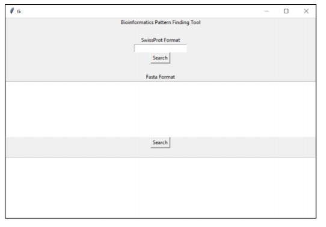
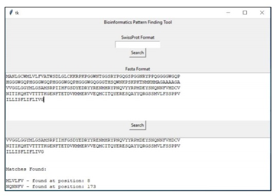

Project Overview
This is a project I completed for my Bioinformatics module at university. It is a Python program that uses of the BioPython package in order to find and detect certain patterns in protein sequences. The main focus was on function rather than aesthetics
Requirements
- Users can enter data in two different formats, The tool must use this to Retrieve protein codes from UniProt website
- The tool is able to Identify if the specified linear motif (pattern of amino acids) occurs, how many times it occurs and at what position
- Ability for a non-programmer to utilise the tool effectively
Skills Developed
Developed basic understanding of functions, methods and GUI tools in Python
Further progressed knowledge on making code more readable and easier for others to interpret
Screenshots of work

GUI when tool is initially opened

Data entry one (Swissprot format)

❮
❯
Data entry two (Fasta format)